L'IRCin keeps the power and speed of IRC – the networks, channels and scripts you know – and wraps it in a client with themes, live wallpapers, profile pictures, encrypted chat and games. Built for Windows 11.
Free with no ads, or optional FreeAds · No L'IRCin account required · Windows 10/11
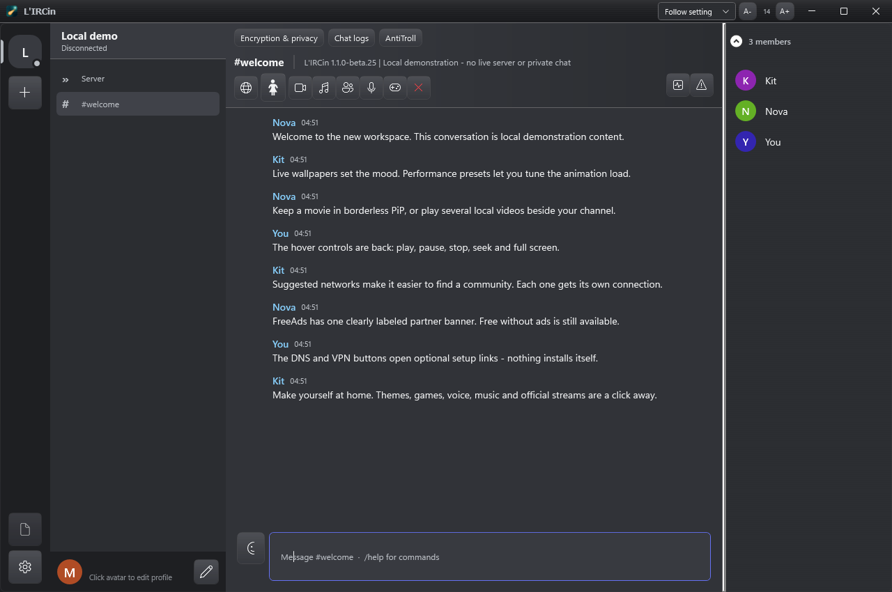
Other users on a classic client just see normal IRC. L'IRCin users get the extras automatically.
Dozens of palettes meet eight layered, jewel-tinted glass materials, with bright bevels and polished reflective controls. Flat, Metallic and Chrome remain available too.
Animated scenes or your own photo, with High Performance, Optimal, Balanced and High Quality settings. Choose the load that suits your PC.
Pick an avatar linked to your nick. Other L'IRCin users see it; everyone else is unaffected.
Encrypted private chats and file transfers between L'IRCin users.
Spades, Hearts, Checkers and Chess in-channel, plus voice rooms.
Headlines and a market ticker in the sidebar, a built-in player with /np sharing.
Plain IRC on the wire. No spammy CTCP probes to strangers – peers are found through a harmless realname tag.
Ignore lists, logging, URL catcher, RSS, weather, per-pane styling, add-on commands.
WPF interface, custom title bars and floating panels. Optional provider pages use WebView2; local video uses a separately downloaded mpv engine.
Play multiple local files. Maximize, stretch, go full screen or use borderless PiP with fading hover controls. Sequence A-B, C-D and later marks, choose fades, and export selected passages to MP4, MKV or WebM using your own FFmpeg. Sharpening and interpolation up to 100 FPS are playback options; performance depends on hardware.
A country-selectable guide to authorized services, including free options without mandatory signup. Availability, sports rights, advertising and registration vary by provider and location.
Independent private-message themes, channel games, local AI bot integration with optional Ollama, and opt-in VirusTotal link/file checks. External scanning services have their own privacy policies.
Screenshots captured from the Windows app using local demonstration content, not browser mockups.
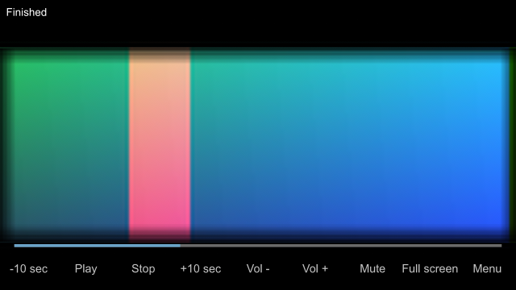
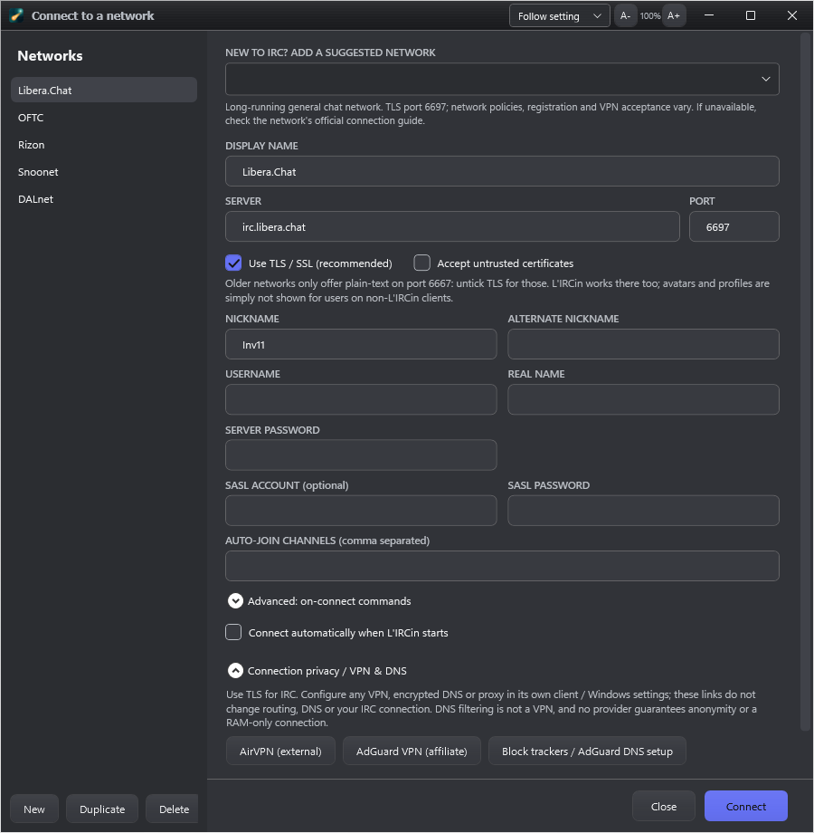
Eight deeply layered glass foundations give the workspace a new backbone: jewel-tinted rails and side panels, multi-stop reflective headers, polished bevels, and crisp glass controls. Each works with all palettes and finishes, without blur or animation. Beta.25 previews below are genuine Windows app captures with fictional local demonstration content.
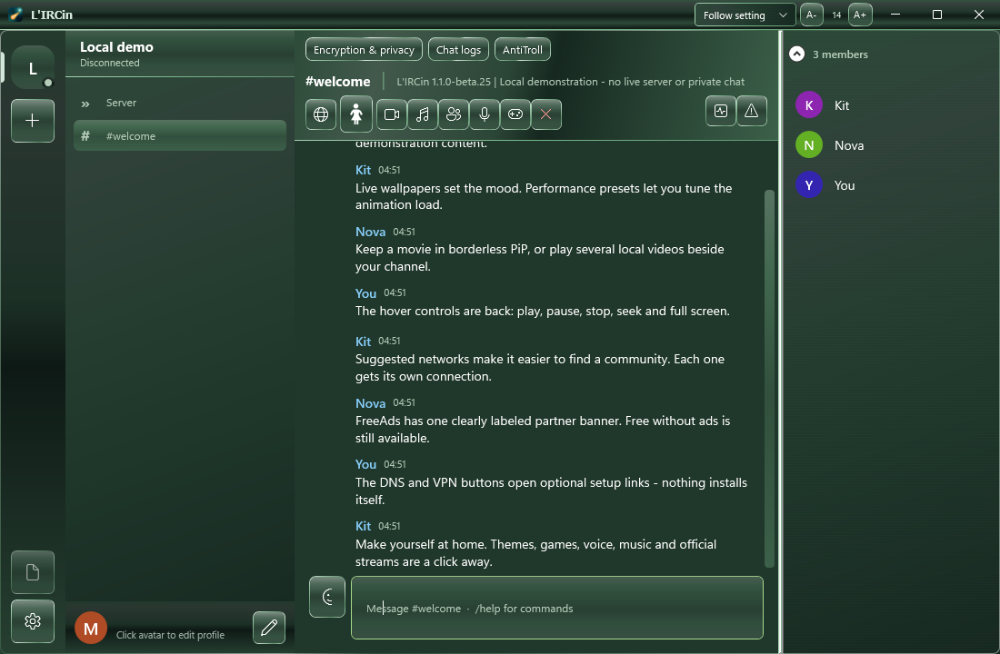
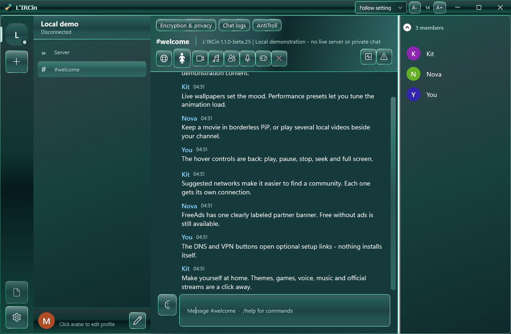
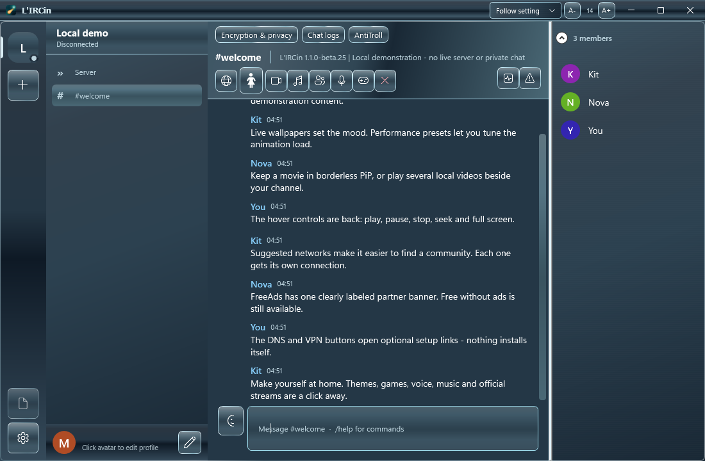
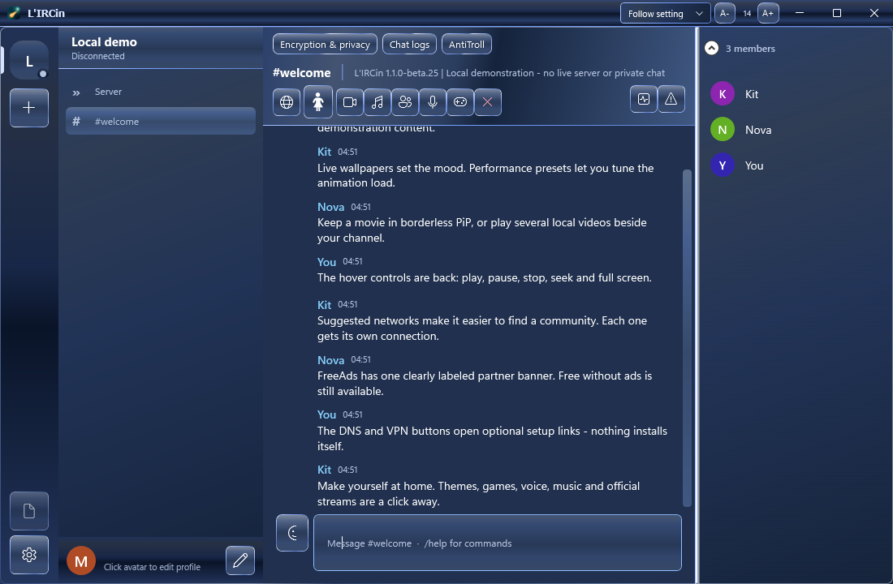
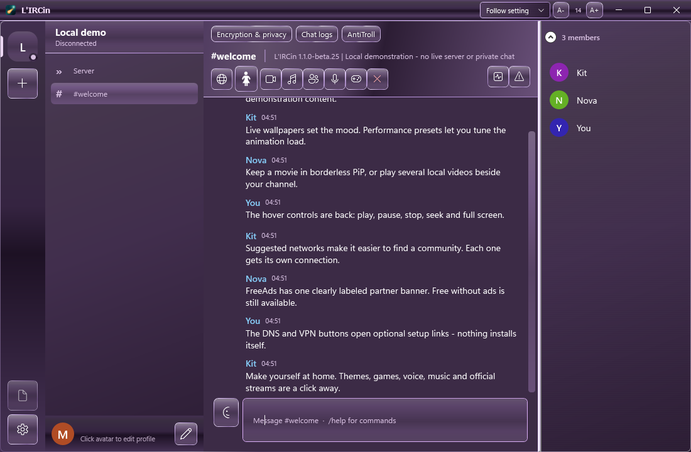
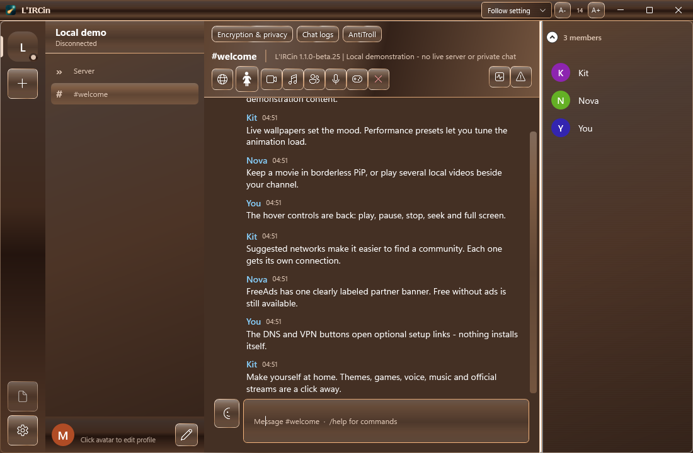
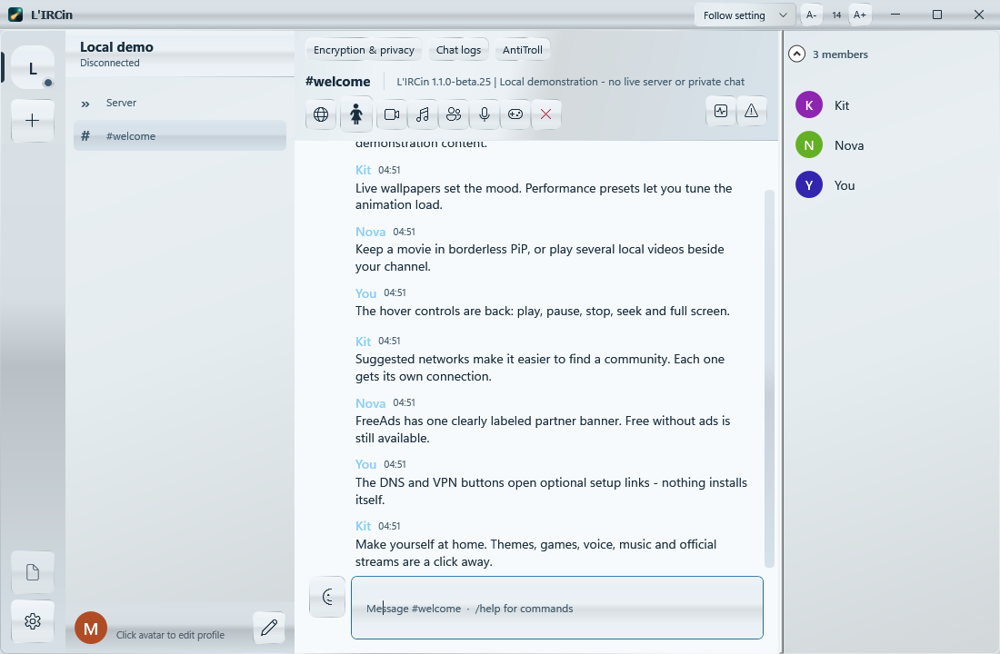
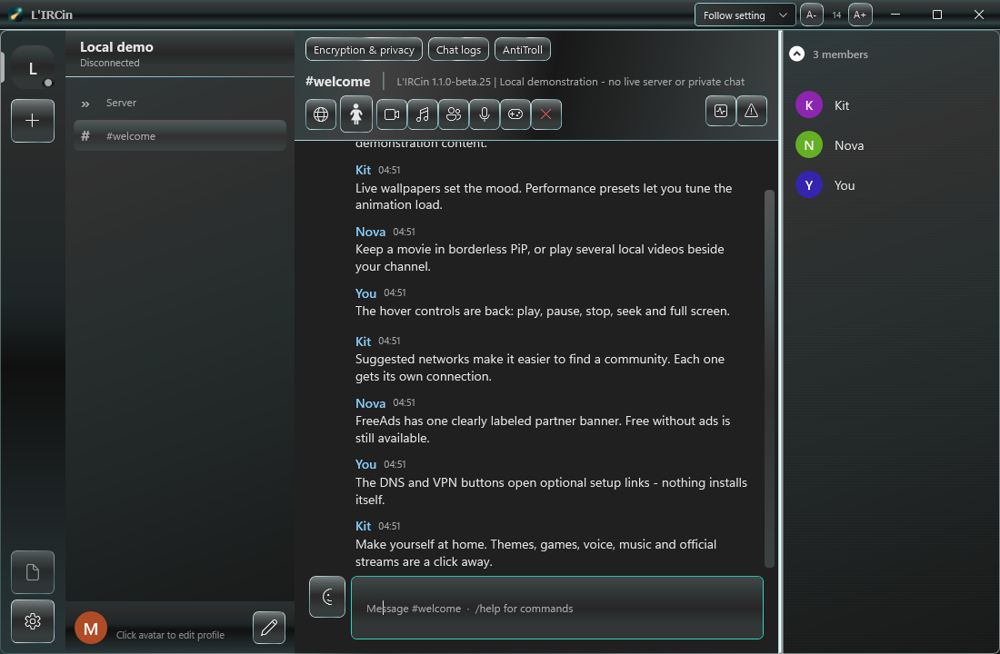
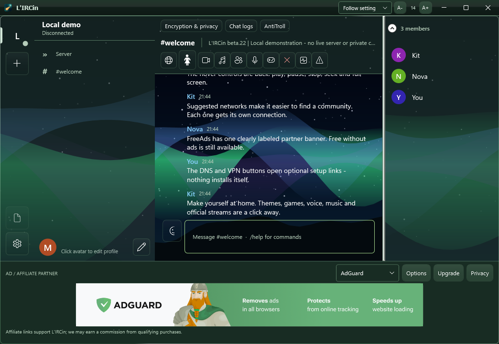
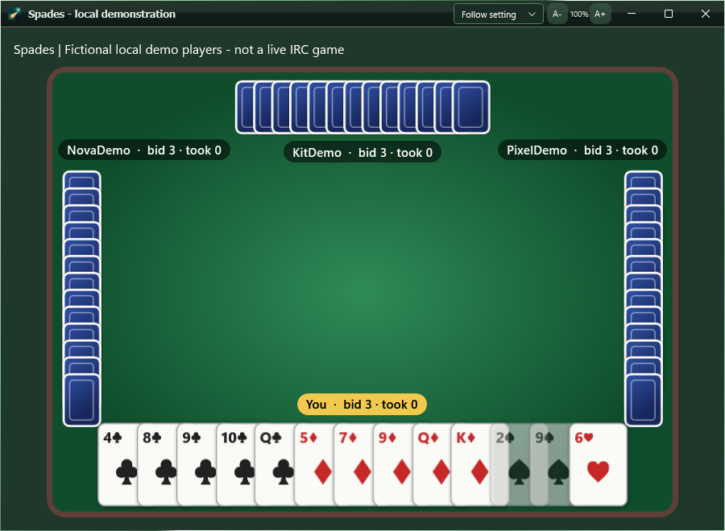
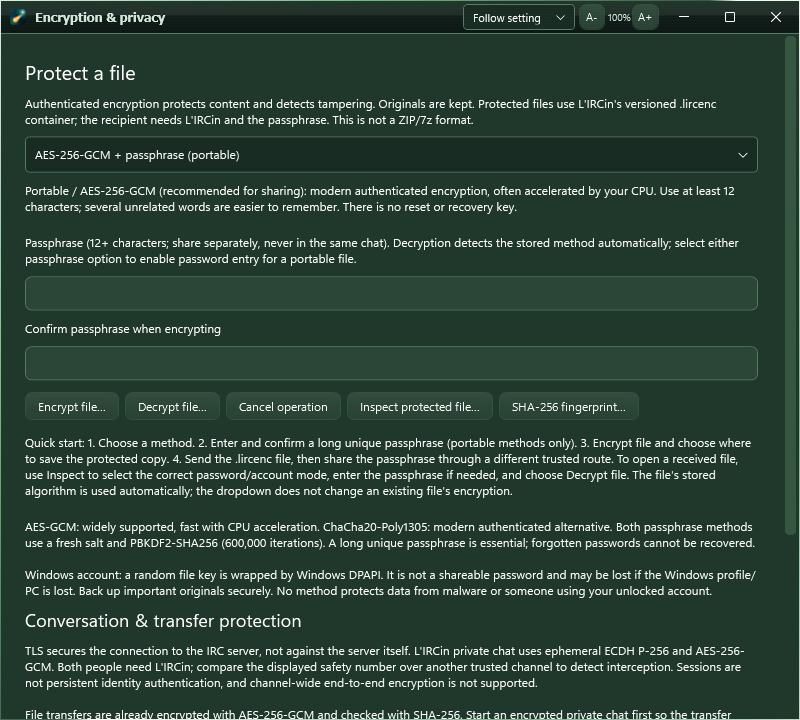
Also new: progressive video cut export, retained ignored-message history by date, safe temporary-cache cleanup, two independently hideable market tickers, sidebar-sized music with expand/restore, classic trout actions, connection traffic counters and opt-in CISA advisory links. AntiTroll is explicitly early beta. TCP packet loss is not measured; the advisory catalog is not a system scanner.
The free edition is a complete IRC client, forever. Paid editions fund development and unlock extras. One-time payment, no subscription.
Current price on Gumroad
Current price on Gumroad
FreeAds supports development with a small labeled AdGuard affiliate banner outside chat. Images are stored locally; no ad scripts or impression reporting. We may earn a commission on qualifying purchases. Free without ads remains available, and a paid activation hides affiliate placements.
Choose your download